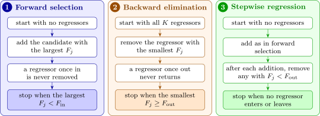

7.4 Stepwise methods
When there are too many candidates to fit every subset, or as a quicker first look, models are built one regressor at a time. Every step uses the partial \(F\) statistic of Subsection 3.11 for a single regressor \(x_j\) given the regressors already in the model, \[ F_j = \frac {SS_R(\beta _j \mid \text {others in the model})}{MS_{\mathrm {Res}}(\text {model with } x_j)} , \] which equals the square of the \(t\) statistic for \(\beta _j\) (Theorem 3.11.4). Two thresholds are chosen: \(F_{\mathrm {in}}\), which a regressor must exceed to enter, and \(F_{\mathrm {out}}\), below which a regressor already in the model is removed. Common choices are \(F_{\mathrm {in}} = F_{\mathrm {out}} = 4\), roughly the \(5\%\) point of \(F_{1,\nu }\) for moderate \(\nu \). Figure 14 summarises the three methods.

Example 7.4.1. Apply forward selection and backward elimination to the farm data, with \(F_{\mathrm {in}} = F_{\mathrm {out}} = 4\).
Solution. All the residual sums of squares are in the table of Example 7.3.1.
Forward selection. Step 1: with no regressors, \(SS_{\mathrm {Res}} = 574.67\). Adding \(x_1\) gives \(F = (574.67 - 81.73)/(81.73/10) = 60.3\); adding \(x_2\), \((574.67 - 176.34)/17.63 = 22.6\); adding \(x_3\), \((574.67 - 552.56)/55.26 = 0.40\). The largest is \(60.3 > 4\), so \(x_1\) enters. Step 2: given \(x_1\), \begin {align*} x_2:\quad F &= \frac {81.73 - 28.33}{28.33/9} = \frac {53.40}{3.148} = 16.96, \\ x_3:\quad F &= \frac {81.73 - 67.85}{67.85/9} = \frac {13.88}{7.539} = 1.84 , \end {align*}
so \(x_2\) enters. Step 3: given \(x_1\) and \(x_2\), adding \(x_3\) gives \(F = (28.33 - 26.89)/(26.89/8) = 1.44/3.361 = 0.43 < 4\). Stop. The model is \(x_1, x_2\). (In stepwise regression we would also check, after \(x_2\) entered, whether \(x_1\) should leave: \(F = (176.34 - 28.33)/3.148 = 47.0\), so it stays, and the result is the same.)
Backward elimination. Start from the full model, \(MS_{\mathrm {Res}} = 3.361\). Deleting each regressor in turn: \begin {align*} x_1:\quad F &= (92.71 - 26.89)/3.361 = 19.58, \\ x_2:\quad F &= (67.85 - 26.89)/3.361 = 12.19, \\ x_3:\quad F &= (28.33 - 26.89)/3.361 = 0.43 . \end {align*}
The smallest, \(0.43 < 4\), so \(x_3\) leaves. In the model \(x_1, x_2\) (\(MS_{\mathrm {Res}} = 3.148\)), deleting \(x_1\) gives \(F = 47.0\) and deleting \(x_2\) gives \(F = 16.96\), both above \(4\). Stop. The model is again \(x_1, x_2\). Here all methods agree; Problem 7.6.4 shows that they need not.
Questions on this section
Stuck on something here? Ask below and it stays attached to this topic.